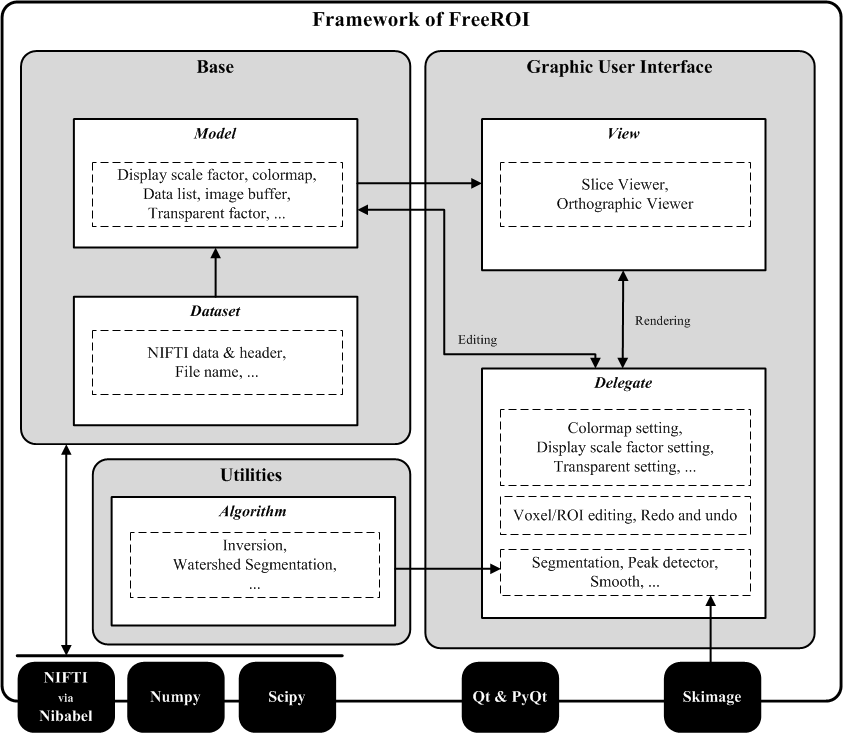

Main Window¶
As a frame, main window combines all above parts together. It works like the ‘main file’ in codes.
In order to provide an easy-to-use graphic user interface, with the complicated neuroimage datasets and many different image processing methods, FreeROI is developed following a Model-View-Delegate (MVD) architecture pattern (a modified version of Model-View-Controller architecture) under Qt framework.
The software could be divided into three kinds of components, which are model, view and delegate. The MVD design defines the interaction between them.
For details about these components, see the following section.
The module bpdataset defines the baisc data structure (VolumeDataset) – a single neuroimage data (NIFTI-1 format, either 3D or 4D) and many functions used to read/modify the value of single voxel and related parameters for display purpose.
To illustrate the usage of class VolumeData, a toy example is present.
# import module bpdataset
from froi.gui.base import bpdataset
# initialize a new neuroimage dataset
new_img = bpdataset.VolumeDataset(source='nifti-file', label_config_center)
Note: argument label_config_center is a setting class used for label display implemented in the FreeROI.
After initialization, we could get several kinds of information from new_img, including the name of the data, the header and data stored in the file, and get/set many parameters used for image display (i.e. the minimum and maximum value for display, the colormap and the degree of transparence).
It worths noting that, in order to optimize the speed of rending, the data stored in RGBA format used to display is created in each instance of VolumeDataset, named _rgba_list. While display, the RGBA data is converted into QImage format using a third-part-module array2qimage.
In FreeROI, the module datamodel implements a list model VolumeListModel to organize the dataset. The class VolumeListModel inherits from class QAbstractListModel from PyQt4. Every neuroimage dataset (an instance of bpdataset) is stored in a cell of the list model. The VolumeListModel provides several useful functions to access the dataset.
As the central part of the software, none action could be done without the VolumeListModel. The users give their command to the model, and model takes specific action like change the display parameter or modify a voxel’s value for one dataset. At the same time, the model would ask other components like Viewer to cooporate with it to finish the job. More specially, while the data in list model has been changed, the model would emit specific signal. The other components like Viewer would accept the signal and take some programmed actions. For example, if the user changed the colormap for one neuroimage dataset, the model would emit a signal named ‘repaint_slices’, and the Viewer part would accept it and re-paint the display image based on the new colormap.
Theoriticaly, the basic dataset (the instances of bpdataset) would not communicate with the other parts directly, except for VolumeListModel.
FreeROI provides two kinds of Viewer to display the image, including GridView which displays the image in an axial view of field slice-by-slice and OrthView which displays image in three orthogonal points of view: axial, sagittal and coronal. Both viewers have same interface communicating other components in FreeROI.
As another part of the component view, parameter viewer provides a graphic user interface to display and set the display parameters for high-lighted dataset in list model. All settings in parameter viewers would be passed to the VolumeListModel.
FreeROI provides many kinds of image processing tools, such as several implements based on different algorithms in image smoothing, image segmentation and feature extraction. All these tools form the delegate component in software.
As a frame, main window combines all above parts together. It works like the ‘main file’ in codes.